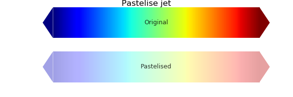

3.5.3.22. test_color_pastelise.py – Test pastelise¶

"""Test :class:`~vacumm.misc.color.pastelise` """
# Imports
from vcmq import P, pastelise, code_file_name, plot_cmap
cmap_name = "jet"
cmap_old = P.get_cmap(cmap_name)
# Pastelise
cmap_new = pastelise(cmap_old, s=.15, v=.9)
# Plot
fig = P.figure(figsize=(6, 2))
kw = dict(fig=fig, figsize=None, aspect=.15, show=False, close=False)
P.subplot(211)
plot_cmap(cmap_old, title='Original', **kw)
P.subplot(212)
plot_cmap(cmap_new, title='Pastelised', **kw)
P.tight_layout()
P.figtext(.5, 1, 'Pastelise '+cmap_name, va='top', ha='center', size=12)
P.show()
P.savefig(code_file_name(ext='png'))
P.close()